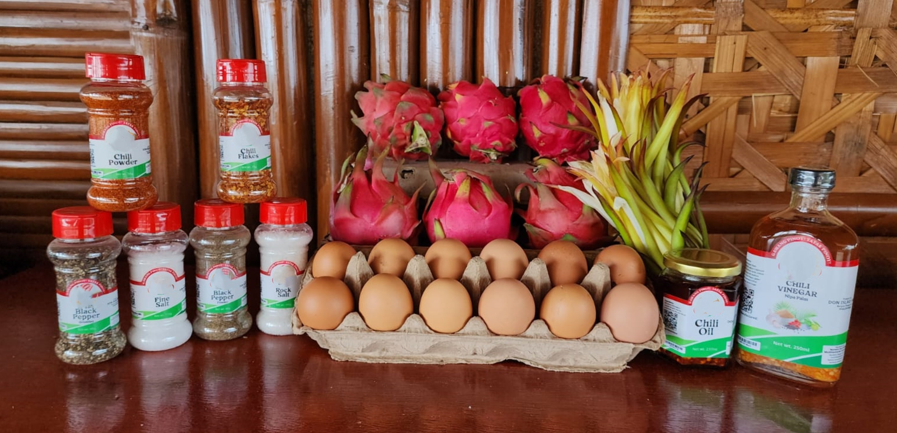
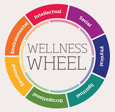

PLANT-BASED NUTRITION
Plant-based nutrition is a dietary approach that emphasizes consuming whole, minimally processed plant foods. This includes a variety of fruits, vegetables, whole grains, legumes, nuts, and seeds while minimizing or eliminating animal products and processed foods. A plant-based diet can be a powerful way to improve personal health and contribute to environmental sustainability.

ORGANIC FOODS
Organic foods are produced through agricultural practices that prioritize environmental sustainability, animal welfare, and avoidance of synthetic chemicals. These practices include crop rotation, green manure, compost, and biological pest control, eschewing most synthetic fertilizers, pesticides, antibiotics, and genetically modified organisms (GMOs).
ACUPUNCTURE
Acupuncture is a holistic therapy with ancient roots and modern applications. By stimulating specific points on the body, acupuncture aims to restore balance and promote natural healing processes. While traditional in its origins, acupuncture has found a place in contemporary healthcare, supported by growing scientific evidence and widespread clinical use.
REFLEXOLOGY THERAPY
Reflexology is a complementary therapy that involves applying pressure to specific points on the feet, hands, and ears. These points are believed to correspond to different organs and systems in the body. Reflexology aims to promote health and well-being through the stimulation of these reflex points, encouraging the body's natural healing processes.
MASSAGE THERAPY
Massage therapy is a versatile and widely practiced form of holistic health care that offers numerous physical, mental, and emotional benefits. By manipulating the body's soft tissues, massage therapy can relieve pain, reduce stress, improved circulation, and enhance overall well-being. Massage therapy provides a natural and effective way to support health and wellness.
MEDITATION & MINDFULNESS THERAPY
Meditation and mindfulness therapy offer powerful tools for enhancing mental and emotional well-being. Through practices that promote focused attention, awareness, and relaxation, individuals can experience reduced stress, improved emotional health, and enhanced cognitive function.
GYM FITNESS TRAINING
Gym fitness training offers a structured and effective way to improve physical health, mental well-being, and overall quality of life. By combining cardiovascular exercises, strenght training, flexibility routines, and proper recovery, individuals can achieve balanced fitness and long-term health benefits. A tailored gym fitness routine can help you reach your personal fitness goals and maintain a healthy, active lifestyle.
MENTAL HEALTH COUNSELING & THERAPY
Mental health counseling and therapy offer vital resources for individuals seeking to improve their mental and emotional well-being. Through a variety of therapeutic approaches, individuals can address and overcome challenges, develop healthier coping mechanisms, and achieve greater self-awareness and personal growth.

HEALTH & WELLNESS AWARENESS WORKSHOPS
Health and wellness awareness workshops are invaluable in promoting a holistic approach to health. By providing education, practical skills, motivation, and community support, these workshops empower individuals to take proactive steps towards improving their overall well-being.